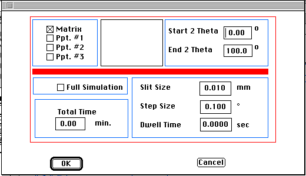

Distributed By: Virtual Labs
Diffractometer Setup Dialog Box
PATH...File Menu:New:x-ray diffract::Diffractometer...
PATH...{Diffractometer}:Define Menu::Define...

Diffractometer Setup Dialog Box
This final diffraction technique calculates a simplified Diffractometer
plot with a graph of intensity vs 2theta. This object is for poly-grained
material and in addition to a weighted average it compensates for the Lorentz-polarization
effects. The program does not compensate for diffractometer geometry, detector
parameters or grain size and orientation preference.
The above dialog box, is located under the Define Menu. It provides for
the selection of the crystals to appear in the plot as well as for the specification
of the starting and ending 2theta values. For this object, the default beam
is the x-ray. If it is desired to calculate a diffractometer plot with an
electron beam it will be necessary to significantly shrink the range of
2theta values.
Author: J.ames T.
Stanley
 Desktop
Manual:Dialog Boxes
Desktop
Manual:Dialog Boxes
Distributed By: Virtual Labs
Last Updated:1/12/96 Sat, Apr 27, 1996